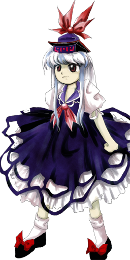

Kamishirasawa Keine é frequentemente vista como:
Calma e ponderada – age sempre com serenidade, sendo a voz da razão em Gensokyo.
Protetora – demonstra um cuidado profundo com a Vila Humana e seus habitantes.
Séria e estudiosa – valoriza o conhecimento, a história e a educação acima de tudo.
Ela transmite a sensação de uma professora dedicada e guardiã severa, mas extremamente gentil com quem protege.
📚 Intelecto superior
Keine é extremamente inteligente e culta:
Possui vasto conhecimento sobre a história de Gensokyo
É uma educadora exemplar para as crianças da vila
Analisa situações com lógica e precisão
Sua sabedoria faz dela uma conselheira confiável para humanos e até para alguns youkais.
🎭 Comportamento dual
Ela apresenta duas formas distintas com traços próprios:
Forma humana: pacífica, diplomática e focada na civilização e no ensino
Forma Hakutaku: mais instintiva, feroz e com um senso de proteção ainda mais implacável
Sua transição ocorre principalmente em noites de lua cheia.
🏫 Vida na Vila Humana
Keine vive dedicada à comunidade:
Passa grande parte do tempo ensinando na escola da vila
Organiza registros históricos e protege as memórias dos moradores
Mantém a ordem e afasta ameaças externas de forma discreta
Ela prefere o ambiente urbano e civilizado da Vila Humana, onde pode exercer seu papel de mentora.
🤝 Relação com os outros
Keine interage com várias figuras importantes de Gensokyo:
Orienta e protege os habitantes comuns da vila
Mantém uma relação de respeito cauteloso com youkais poderosos (como Reimu e Marisa)
Atua como mediadora para evitar conflitos desnecessários
Apesar de ser rigorosa, ela é profundamente respeitada e querida por todos.
Professora e Historiadora
Keine trabalha formalmente educando as crianças da Vila Humana e documentando a história e os eventos de Gensokyo.
Guardiã da Vila Humana
Além de lecionar, ela utiliza seus poderes para ocultar a Vila Humana de intrusos e protegê-la de perigos externos.
Manipulação da história (Forma Humana)
O poder principal de Keine em sua forma padrão:
Pode "comer" ou ocultar fatos e memórias da história
Consegue fazer com que eventos recentes ou passados simplesmente não tenham acontecido para o mundo
Utilizada principalmente para esconder a Vila Humana dos olhos de youkais mal-intencionados
Esse poder protege diretamente a segurança da civilização humana.
Poderes de Hakutaku (Forma Transformada)
Quando assume a forma de Hakutaku durante a lua cheia:
Ganha chifres e uma aura mística poderosa
Adquire a capacidade de criar e moldar a história e a geografia
Sua força física e mágica aumentam drasticamente
Artes marciais e combate corpo a corpo
Mesmo sendo uma educadora, Keine é excelente em combate físico, utilizando chutes e técnicas ágeis para subjugar inimigos sem depender apenas de magia.
Resistência e inteligência tática
Sua vasta experiência em combate e raciocínio rápido fazem dela uma estrategista formidável, capaz de antecipar os movimentos de qualquer adversário.
Sua combinação de intelecto brilhante, habilidades de ocultação histórica e ferocidade como Hakutaku faz dela uma das protetoras mais confiáveis de Gensokyo.

Espécie:Hakutaku
Título:A Fada de Gelo Forte (The Strong Ice Fairy)